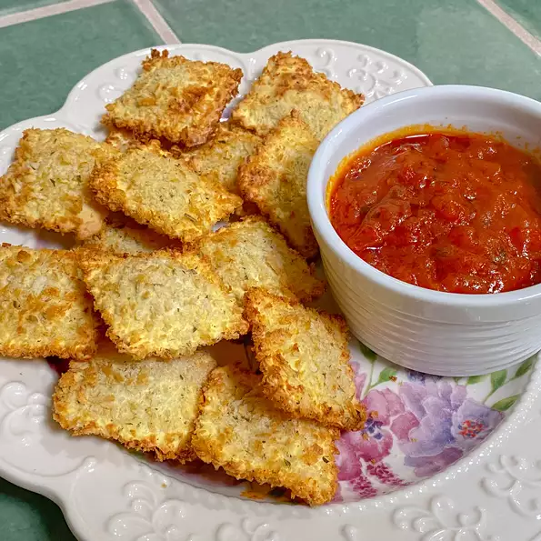

Home
Ravioli

Description
The St. Louis style of preparing ravioli is unique and delicious. The ravioli is breaded, fried and served with marinara sauce and a sprinkling of parmesan cheese.
Ingredients
- 2 tablespoons whole milk
- 1 egg
- ¾ cup Italian seasoned bread crumbs
- ½ teaspoon salt (Optional)
- ½ (25 ounce) package frozen cheese ravioli, thawed
- 3 cups vegetable oil for frying
- 1 tablespoon grated Parmesan cheese
- 1 (16 ounce) jar spaghetti sauce
Steps
- Combine milk and egg in a small bowl. Place breadcrumbs and if desired, salt in a shallow bowl. Dip ravioli in milk mixture, and coat with breadcrumbs.
- In a large saucepan, heat marinara sauce over medium heat until bubbling. Reduce the heat to simmer.
- In a large heavy pan, pour oil to depth of 2 inches. Heat oil over medium heat until a small amount of breading sizzles and turns brown. Fry ravioli, a few at a time, 1 minute on each side or until golden. Drain on paper towels. Sprinkle with Parmesan cheese and serve immediately with hot marinara sauce.